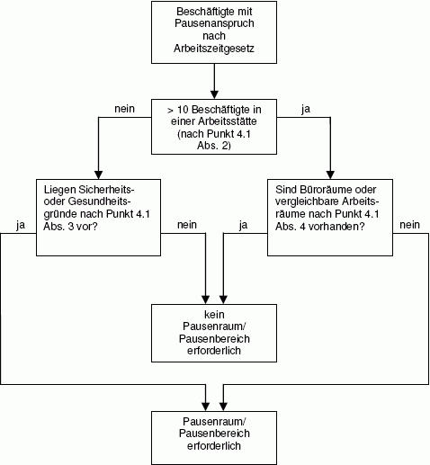

(1) Pausenräume und Pausenbereiche müssen in einer der Sicherheit und der Gesundheit zuträglichen Umgebung eingerichtet und betrieben werden.
Pausenbereiche sind Pausenräumen gleichgestellt, wenn sie gleichwertige Bedingungen für die Pause gewährleisten.
(2) Ein Pausenraum oder Pausenbereich ist zur Verfügung zu stellen, wenn mehr als zehn Beschäftigte einschließlich Zeitarbeitnehmern gleichzeitig in der Arbeitsstätte tätig sind.
Nicht zu berücksichtigen sind Beschäftigte, die
(3) Unabhängig von der Anzahl der Beschäftigten ist ein Pausenraum oder Pausenbereich zur Verfügung zu stellen, wenn Sicherheits- oder Gesundheitsgründe dies erfordern. Das können z. B. sein:
(4) Auf einen Pausenraum oder Pausenbereich kann bei Tätigkeiten in Büroräumen oder in vergleichbaren Arbeitsräumen verzichtet werden, sofern diese während der Pause frei von arbeitsbedingten Störungen (z. B. durch Publikumsverkehr, Telefonate) sind. Damit wird eine gleichwertige Erholung im Arbeitsraum gewährleistet. Vergleichbare Arbeitsräume können z. B. Registraturen oder Bibliotheken sein.

Abb. 1: Ermittlung der Notwendigkeit von Pausenräumen oder Pausenbereichen
(5) Pausenräume und Pausenbereiche müssen leicht und sicher über Verkehrswege erreichbar sein. Der Zeitbedarf zum Erreichen der Pausenräume soll fünf Minuten je Wegstrecke (zu Fuß oder mit betrieblich zur Verfügung gestellten Verkehrsmitteln) nicht überschreiten. Die Wegstrecke zu Pausenbereichen darf 100 m nicht überschreiten.
(6) Pausenräume und Pausenbereiche dürfen nicht unterhalb schwebender Lasten oder in Bereichen mit Gefährdung durch herabfallende Gegenstände eingerichtet werden.
(7) Im Pausenraum und Pausenbereich sind Beeinträchtigungen, z. B. durch Vibrationen, Stäube, Dämpfe oder Gerüche, soweit wie möglich auszuschließen. Während der Pause darf der durchschnittliche Schalldruckpegel in Pausenräumen aus den Betriebseinrichtungen und dem von außen einwirkenden Umgebungslärm höchstens 55 dB(A) betragen. In Pausenbereichen soll dieser Wert nicht überschritten werden.
(8) Pausenräume und Pausenbereiche müssen frei von arbeitsbedingten Störungen (z. B. durch Produktionsabläufe, Publikumsverkehr, Telefonate) sein.
(9) In Pausenräumen und Pausenbereichen muss für Beschäftigte, die den Raum oder Bereich gleichzeitig benutzen sollen, eine Grundfläche von jeweils mindestens 1,00 m² einschließlich Sitzgelegenheit und Tisch vorhanden sein. Flächen für weitere Einrichtungsgegenstände, Zugänge und Verkehrswege sind hinzuzurechnen (siehe ASR A1.2 "Raumabmessungen und Bewegungsflächen").
Die Grundfläche eines Pausenraumes muss mindestens 6,00 m² betragen.
Die lichte Höhe von Pausenräumen muss den Anforderungen der ASR A1.2 "Raumabmessungen und Bewegungsflächen" entsprechen.
(10) Pausenräume sollen eine Sichtverbindung nach außen aufweisen. Für Pausenbereiche wird eine solche empfohlen.
(11) Pausenräume und Pausenbereiche müssen
(12) Der Umfang der Ausstattung von Pausenräumen und Pausenbereichen richtet sich nach der Anzahl der gleichzeitig anwesenden Benutzer. Für diese sind Sitzgelegenheiten mit Rückenlehne und Tische vorzusehen. Das Inventar muss leicht zu reinigen sein. Ein Abfallbehälter mit Deckel ist bereitzustellen.
Ein Bedarf für Einrichtungen für das Wärmen und Kühlen von Lebensmitteln liegt vor, wenn keine Kantine zur Verfügung steht oder bei Beschäftigten, die durch ärztliches Attest nachweisen, dass sie eine bestimmte Diät einhalten müssen. Bei Bedarf sind Kleiderablagen und der Zugang zu Trinkwasser zur Verfügung zu stellen. Eine Waschgelegenheit im Pausenraum kann zweckmäßig sein (siehe ASR A4.1 "Sanitärräume").
(13) Eine Kantine oder ein Restaurant kann als Pausenraum genutzt werden, wenn sich die Beschäftigten ohne Verzehrzwang aufhalten dürfen und die Anforderungen von Punkt 4.1 Abs. 5, 7 und 9 bis 12 erfüllt werden.
(1) Pausenräume können außerhalb der festgelegten Pausenzeiten für andere Zwecke, z. B. Besprechungen, Schulungen, genutzt werden, wenn diese die in der ASR A1.2 "Raumabmessungen und Bewegungsflächen" enthaltenen Raumabmessungen erfüllen. Die Räume müssen vor der Nutzung als Pausenraum gelüftet und gereinigt sein.
(2) Führt die Tür eines Pausenraumes unmittelbar ins Freie, so sind die Beschäftigten vor Zugluft zu schützen. Dies kann durch einen Windfang oder Windfangraum mit Vorhang aus einem schwer entflammbaren Material erreicht werden.
(1) Pausenbereiche sind an ungefährdeter Stelle anzuordnen. Sie dürfen z. B. nicht in der Nähe heißer Oberflächen eingerichtet werden.
(2) Pausenbereiche müssen optisch abgetrennt sein, z. B. durch mobile Trennwände, Möbel oder geeignete Pflanzen.